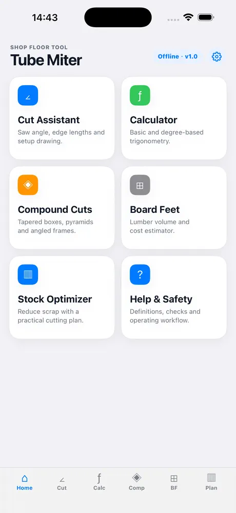
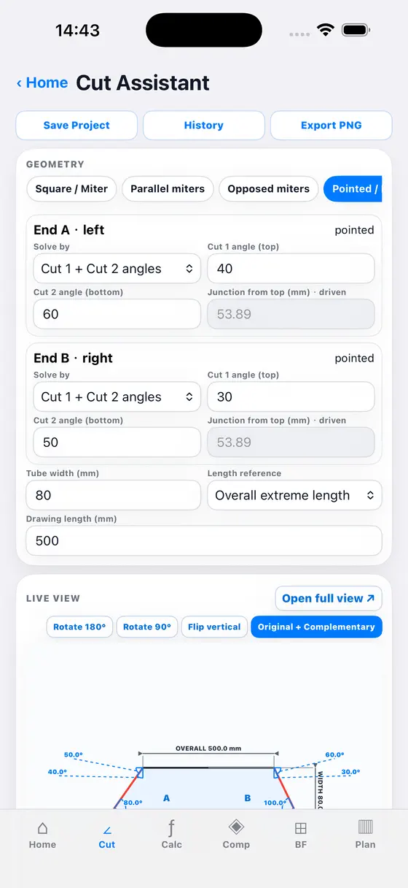

Votre dessin dit 40°. Votre scie dit 50°. Les deux ont raison.
Le dessin vous donne un angle, l'échelle de votre machine en lit un autre, et quelque part entre les deux se cache un 90 − 40 = 50 mental à faire dans votre tête, avec des gants, avant que la lame ne descende. Tube Miter Calculator fait cette conversion pour vous et affiche l'angle, son complément et son supplément côte à côte — à côté des longueurs des bords long / court / centre et d'un dessin coté que vous pouvez faire pivoter pour l'adapter à la machine devant vous.
Pour l'atelier, les monteurs de charpente métallique, les fabricants de mains courantes et d'arceaux, les menuisiers et les bricoleurs — plus les calculs du quotidien (coupes composées, pieds-planche, plans de découpe). Fonctionne entièrement hors ligne, en métrique ou en impérial.


L'angle de votre dessin n'est pas le chiffre de votre scie
Tous les métiers y sont confrontés : le plan, le croquis ou le traçage des tubes donne un angle mesuré d'un certain côté, et la scie à onglets, la scie à froid, la scie à guillotine, la table de scie à ruban ou le guide d'onglet devant vous est gradué dans l'autre sens. Une lecture part de la coupe d'équerre, une autre de la ligne de butée, une autre est la valeur obtuse. Vous convertissez de tête — et quand les deux chiffres semblent presque interchangeables, c'est exactement là que les pièces se perdent.
🏗 Atelier et équipes structure
Mains courantes, garde-corps, serres, rampants de chantier. Le dessin de section donne l'angle au sommet ; la machine veut autre chose. Une engueulade plus tard, quelqu'un fait 90 − 47,5 sur un clavier de téléphone poussiéreux.
🔧 Fabrication et sport mécanique
Arceaux, nœuds de châssis, échappements. Chaque nœud a deux angles de coupe différents, et chacun a un complément dont vous avez aussi besoin — un nœud devient quatre chiffres à garder en tête avant la moindre entaille.
🪚 Menuisiers, ébénistes et DIY
Cadres d'angle, boîtes fuselées, cadres photo, retours de corniche et de plinthe. Certains guides lisent depuis l'équerre, d'autres depuis la butée, et le basculement des 90° en pleine tâche transforme le bois dur cher en chutes.
Pourquoi 40° et 50° forment le couple dangereux
40° et 50° sont complémentaires (ils s'ajoutent à 90°), donc tous deux semblent tout à fait raisonnables sur le même assemblage — et ils ne diffèrent que de 10°. Le double de cette erreur apparaît à l'assemblage, car les deux extrémités ont été coupées.
C'est la pire zone pour le calcul mental :
- 45° ↔ 45° — l'inversion est invisible, donc personne ne remarque quoi que ce soit.
- 30° ↔ 60° — très éloignés, une erreur se voit généralement à l'œil.
- 40° ↔ 50°, 35° ↔ 55°, 47,5° ↔ 42,5° — assez proches pour sembler interchangeables, assez différents pour mettre la pièce au rebut. C'est là que les erreurs arrivent vraiment.
Et ce n'est pas seulement 90° : certains traçages utilisent aussi la lecture supplémentaire, donc 180 − a s'ajoute à la liste. Trois chiffres plausibles, un réglage correct, un tube.


Ce que vous obtenez pour une saisie, exemple a = 40°
| Lecture | Ce que c'est | Quand vous en avez besoin | a = 40° |
|---|---|---|---|
| Angle d'onglet a | Écart par rapport à la coupe d'équerre (une coupe d'équerre fait 0°) | Échelles et jauges graduées depuis l'équerre | 40° |
| Complément 90 − a | La lecture réciproque de la même coupe | Échelles où 90° signifie équerre, et lectures sur la ligne de butée | 50° |
| Supplément 180 − a | La valeur obtuse de la même ligne | Traçage, rapporteurs et lectures d'angle au sommet | 140° |
Vous choisissez toujours le chiffre que veut votre machine — le but est de ne plus avoir à le déduire en pleine tâche, la lame déjà lancée.
Fonctionnalités clés
Six géométries de coupe et cinq calculatrices d'atelier, toutes résolues hors ligne en une fraction de seconde.
∠ Six géométries de coupe
Carré / Onglet, onglets parallèles, onglets opposés, pointe / pointe, pointe / entaille en V et entaille en V / entaille en V. Chaque préréglage charge des valeurs par défaut réalistes : vous changez un chiffre, pas six.
📏 Ne déduisez plus 90 − a à la main
L'angle, le complément (90 − a) et le supplément (180 − a) sont affichés ensemble pour chaque coupe, avec les longueurs des bords long / court / centre — pour correspondre à n'importe quelle échelle de votre scie, qu'elle indique 0° ou 90° à l'équerre.
🖼 Vue dynamique cotée
Un profil d'extrémité plein écran à l'échelle avec flèches de cotation. Pivoter 90° / 180°, retourner verticalement et basculer entre étiquetage original + complémentaire ou original + supplémentaire pour correspondre à la pièce sur votre banc.
◈ Coupes composées
Angle d'onglet et inclinaison de lame pour les boîtes fuselées, les pyramides et les cadres d'angle. Saisissez le nombre de côtés, la pente, la hauteur et l'épaisseur du panneau — obtenez les réglages de scie, la hauteur inclinée et le décalage du bord.
⊞ Pieds-planche et coût
Volume de bois à partir de l'épaisseur, de la largeur et de la longueur, avec quantité, prix au pied-planche et facteur de perte optionnel. Métrique ou impérial.
▥ Optimiseur de stock
Indiquez la longueur du barreau brut, les traits de scie et la coupe d'extrémité, plus vos pièces requises — il établit un plan de découpe pratique et vous dit ce qui reste.
ƒ Calculatrice d'atelier
Un clavier dédié avec trigonométrie en degrés (sin, cos, tan et inverses) et copie du résultat en un geste — plus de lutte avec la calculatrice iOS en gants.
💾 Projets et rapports PNG
Enregistrez les saisies dans l'Historique sous un nom de projet, rechargez-les au chantier suivant, et exportez un rapport PNG vers Photos ou directement vers la feuille de partage iOS.
🔒 Hors ligne et privé
Pas d'Internet, pas de connexion, pas d'analytique. Unités (mm / in), maintien de l'écran allumé et réinitialisation sont les seuls réglages — tout le reste se passe sur votre appareil.
Voyez-le en action
Quatre courtes boucles extraites d'enregistrements d'écran réels sur iPhone 17 Pro Max — l'app est pilotée par un scénario scripté, donc chaque geste, frappe et recalcul à l'écran est authentique. Lecture automatique muette, légendes à l'écran.
Changement de géométries de coupe
Parcourez les six préréglages — le dessin et chaque longueur se mettent à jour au fil des taps.
Vue dynamique : pivoter, retourner, ré-étiqueter
Ouvrez la vue plein écran, pivotez de 90°, retournez verticalement et changez l'étiquetage des angles.
Calculatrice d'atelier
40 + 50 = 90, puis sin(40°) sur le clavier intégré — puis copiez le résultat en un geste.
Les autres modules de l'atelier
Une coupe composée à six côtés à 20°, une commande de 12 planches, puis Optimiser — chaque module se résout pendant la saisie.
Comment ça marche
Quatre étapes d'un assemblage sur le banc aux chiffres sur votre scie.
Tutoriel pas à pas
Chaque écran de l'app, dans l'ordre où vous l'utilisez vraiment.


Cas d'usage réels
Là où un calcul d'onglet rapporte vraiment.

Mains courantes et garde-corps
Coupez le rampant pour rejoindre le poteau à l'angle d'inclinaison exact, ou réalisez un col de cygne pour que le tube épouse proprement le poteau. Faites pivoter la vue dynamique pour voir l'assemblage comme vous le tiendrez en haut de l'escalier.

Arceaux, châssis et cadres
Les structures tubulaires à nœuds multiples sont surtout des coupes en pointe et en V. Réglez l'angle du nœud une fois, obtenez les longueurs long / court / centre, et coupez chaque tube du nœud avec les mêmes chiffres.
Ajustage sur chantier, sans réseau
Les sites isolés, les conteneurs maritimes et les locaux techniques en sous-sol n'ont aucune réception. Tout dans l'app fonctionne sur l'appareil, donc le calcul est là quand vous en avez besoin.
Questions fréquentes
Le dessin dit 40°, ma scie affiche 50°. Lequel est correct ?
Les deux décrivent la même coupe — ils sont complémentaires (ils s'ajoutent à 90°). L'angle d'onglet a se mesure depuis la coupe d'équerre, et 90 − a est la même ligne lue dans l'autre sens. C'est exactement pourquoi 40/50 piège tout le monde : les deux chiffres semblent interchangeables, mais le mauvais réglage met 10° d'erreur à chaque extrémité et 20° à l'assemblage. L'app affiche les deux lectures côte à côte pour ne plus jamais déduire la seconde sur le sol de l'atelier.
Dois-je régler l'angle ou son complément sur la scie ?
Cela dépend de la graduation de l'échelle de votre machine. Si l'échelle indique 0° à l'équerre, réglez l'angle d'onglet a. Si elle indique 90° à l'équerre (graduation depuis la butée), réglez 90 − a. Certains rapporteurs et traçages utilisent la lecture obtuse, 180 − a. Dans la Vue dynamique, utilisez le bouton Original + Complémentaire / Original + Supplémentaire pour étiqueter le dessin comme votre échelle est imprimée, puis validez toujours sur une chute d'abord.
Comment l'angle d'onglet est-il défini ?
L'angle d'onglet se mesure depuis la coupe d'équerre, donc une coupe d'équerre fait 0°. La vue dynamique affiche aussi les valeurs complémentaires (90° − angle) ou supplémentaires pour correspondre à l'échelle imprimée sur votre scie.
Quelle différence entre une coupe en pointe et une entaille en V ?
Une coupe en pointe effile l'extrémité du tube en un point unique, quand un tube rejoint un autre à un angle. Une entaille en V (bouche de poisson) retire une selle en forme de V pour que le tube épouse un poteau rond ou un autre tube — l'assemblage classique des mains courantes, des joints en T et des arceaux. L'app gère les deux, et la combinaison pointe / entaille en V.
Comment basculer entre millimètres et pouces ?
Touchez l'icône engrenage sur l'écran d'accueil et choisissez Métrique ou Impérial. Les valeurs existantes sont converties automatiquement et le choix est mémorisé.
Pourquoi ne puis-je pas enregistrer un rapport dans Photos ?
L'app a besoin de l'autorisation « Ajouter des photos uniquement ». Activez-la dans Réglages iOS → Confidentialité et sécurité → Photos → Tube Miter Calculator. Vous pouvez toujours utiliser l'option Partager à la place.
L'app a-t-elle besoin d'une connexion Internet ?
Non. Tous les calculs et projets enregistrés restent sur votre appareil. Aucun compte, aucune analytique, aucun suivi — voir la Politique de confidentialité.
Puis-je enregistrer un chantier et y revenir ?
Oui. Enregistrez les saisies dans l'Historique sous un nom de projet et rechargez-les plus tard — pour chaque module séparément (Coupe, Composé, Pieds-planche, Stock). Supprimez les entrées devenues inutiles depuis le même panneau.
Fonctionne-t-elle sur iPad ?
Oui. C'est une app universelle avec une mise en page plus large sur iPad et une prise en charge complète de l'orientation.
Quelle est la précision des résultats ?
Les calculs sont exacts pour une géométrie idéale ; la précision réelle dépend de la correspondance entre vos saisies et le matériau — diamètre mesuré, épaisseur de paroi, angle d'assemblage et traits de scie. Coupez toujours une première pièce de contrôle et vérifiez l'ajustement avant la coupe en série.
Comment contacter l'assistance ?
Écrivez à wangning.engineer@outlook.com. Le délai de réponse habituel est de 24 à 48 heures.
Note de sécurité
Les résultats sont des aides au réglage. Avant chaque série : confirmez le sens de graduation de votre échelle (0° à l'équerre ou 90° à l'équerre), puis vérifiez l'identité de l'extrémité, la face haut / bas, le côté du bord émoussé, le côté rebut et les traits de scie, et contrôlez une première pièce. Surtout avec des paires quasi symétriques comme 40° / 50°, une coupe d'essai coûte une minute ; la mauvaise coûte le tube. Portez une protection des yeux et de l'audition, et suivez le manuel de votre machine.
Télécharger l'app
Tube Miter Calculator est disponible sur l'App Store pour iPhone et iPad.